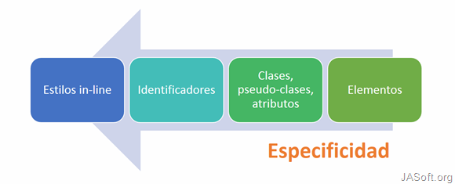

Especificidad
Ideas Principales
Cuenta con 4 Niveles:
- inline
- ID's
- Clases, Atributos y Pseudoclases
- Elemento y Pseudoelementos
Apuntes
Es el medio por el cual los navegadores deciden que valores de CSS son los mas relevantes para un elemento y, por lo tanto, se aplicaran.
Esto solo se aplica cuando el mismo elemento es el objetivo de varias declaraciones. Segun las reglas de CSS los elementos diriigidos directamente siempre tienen prioridad sobre las reglas que hereda un elemento de un antepasado.
Cuando varias declaraciones tienen la misma especificidad, la ultima declaracion encontrada en CSS se aplicara al elemento
